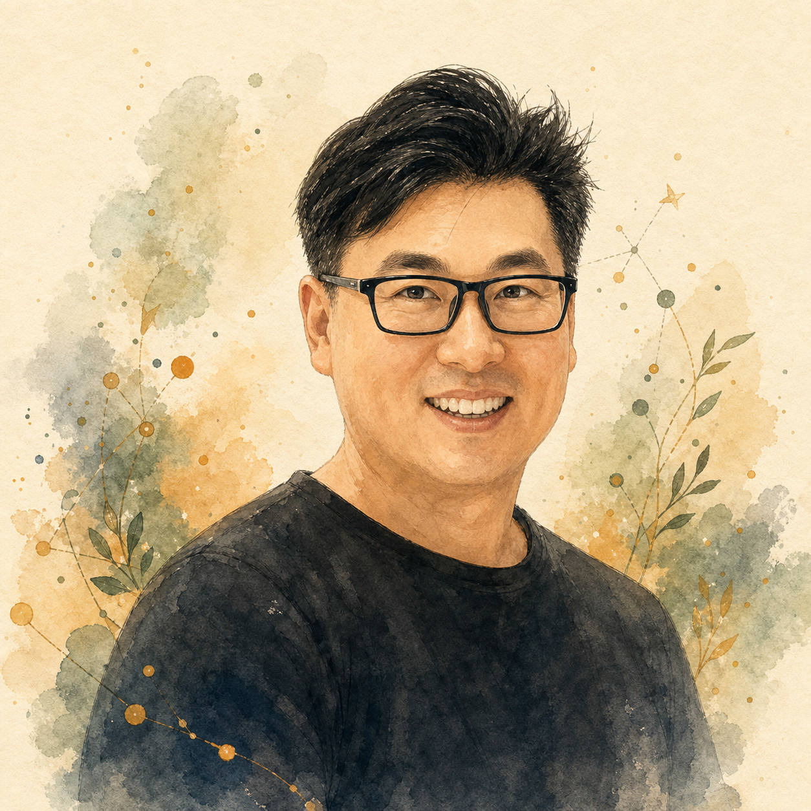
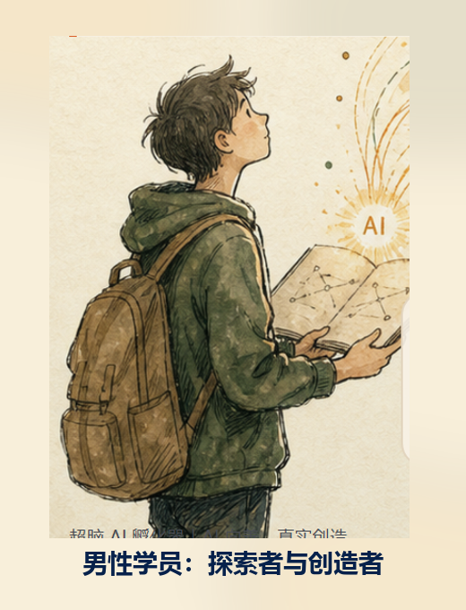
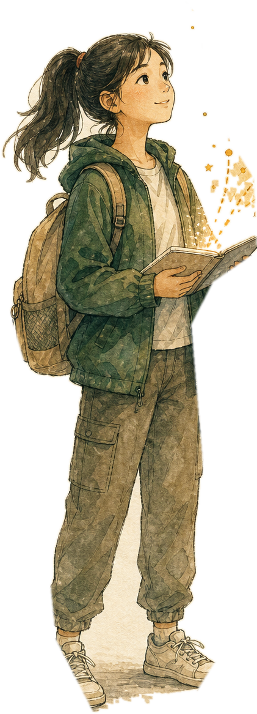

我很早就意识到，商业不是抽象概念，而是一整套抵达真实人的系统。
2003 年到上海后，我进入上海申美饮料食品有限公司，也就是可口可乐在中国的重要装瓶体系，从渠道营销和终端执行开始理解一个产品如何真实抵达消费者。后来进入联合利华，转向品牌营销与用户洞察，并曾在伦敦作为高级品牌经理参与 Dove 多芬品牌的全球品牌管理工作。
自我介绍
我从快速消费品的品牌营销进入商业世界，又在 AI 时代重新走向教育领域。 现在我关心的问题是：当 AI 进入学习和创造过程之后，教育如何帮助孩子看见真实的人、解决真实问题，并长出自己的判断与主体性（点燃愿力）。

这三条线索共同构成了我现在的工作方式：既看人，也看系统；既讲理念，也要落到行动。
2003 年到上海后，我进入上海申美饮料食品有限公司，也就是可口可乐在中国的重要装瓶体系，从渠道营销和终端执行开始理解一个产品如何真实抵达消费者。后来进入联合利华，转向品牌营销与用户洞察，并曾在伦敦作为高级品牌经理参与 Dove 多芬品牌的全球品牌管理工作。

我的路径更像是从商业世界、家庭陪伴、AI 工具革命和教育研究中一路转向教育现场。
从财经背景进入商业世界，在城市转换和真实岗位中开始理解系统、执行和机会。
从渠道营销到品牌营销，在全球化组织里训练消费者研究、品牌建设和复杂协同。
为本土企业和成长型公司提供品牌战略、定位、营销体系和组织落地服务，也曾以 CMO / COO 角色深度陪跑。
研究教育心理学，通过教师资格证相关考试，持续研究建构主义、PBL、设计思维、元认知与 AI 协作。
HUMAN 不是把 AI 当万能工具，而是重新追问 AI 时代的人之为人。
AI 越强，孩子越需要知道自己为什么创造、为谁创造、什么不能交给机器决定。教育首先要保护人与人之间真实的联结。

它们看起来分属教育、语法、品牌和营地，但底层都在探索一件事：如何让 AI 帮助人做更高质量的判断和创造。
我的角色主要是课程开发和主讲导师，把 AI 工具、设计思维、田野访谈、MVP、伦理边界和路演表达转化成青少年能使用的路径。
把高考英语真题、语法知识图谱、学生误解和讲解逻辑结合起来，让 AI 帮助老师更准确地理解学生为什么错、该如何讲。
把品牌咨询经验沉淀成可信推理、证据标注和虚拟消费者方法，帮助企业做更高质量的品牌判断。
围绕 AI for Good、真实项目、青少年创造力和导师协作，建立能被老师、助教和学生共同使用的教学结构。
我从小在一个被充分爱护和允许探索的环境里长大，家庭给了我很多安全感和自由感。后来我才意识到，这会自然地变成一种教育立场：教育要做的，不只是把知识灌进去，而是把这种好奇心重新点亮，并让孩子学会把它变成行动。
好的成人不是替孩子完成项目，而是提供边界、方法、资源和托举，让他们真正站出来。
这部分不是合作方案，只是帮助对方快速理解我在哪些问题上可能有用。
理解一个组织如何从理念走向产品、用户、传播、运营和增长，也能帮助学生团队看到真实项目背后的商业与组织闭环。
长期受训练于消费者心理、社会群体行为和实证研究，能帮助学生从“我想做什么”走向“用户真实需要什么”。
关注 AI 如何改变学习结构，而不是简单把 AI 工具塞进课堂。强项是把复杂方法拆成孩子能走完的学习关卡。
珍惜孩子真实的好奇心和表达欲，也相信成人要提供边界、方法、资源和托举。
我不认为自己已经有标准答案。恰恰相反，我现在正在组织和参与的，都是那些能把教育理念、AI 工具、真实项目和孩子的主体性放在同一张桌子上认真打磨的教育实验。